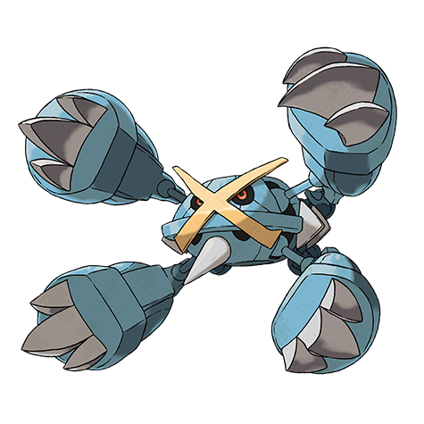
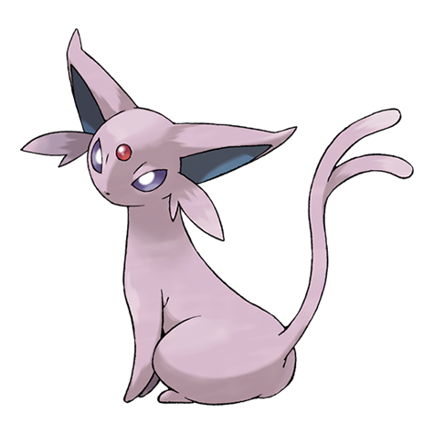

💼 自分
外勤
☀️ 天気
晴れ
夕方 から くもり 最低 4.2℃（観測）／最高 15℃ 降水 0% 東京
🗑️ ゴミ出し
なし
📚 ハルト 塾
あり
19:20〜20:10 社会／20:15〜21:05 理科
📚 ユウト 塾
なし
🧮 リン そろばん
あり
🏠 舞
16時上がり
今日
📚 塾
- ハルト 19:20〜20:10 5限 社会
- ハルト 20:15〜21:05 6限 理科
- ユウト なし
塾ページを開いた時刻 6:21
🗑️ ゴミ出し（朝8時まで）
- ゴミ出しなし
📅 自分の予定
- なし
🏫 学校
- なし
💴 お金・期限
- 07:45 ごろ claude-bridge の Gmail 再認証の期限（PC で setup_auth.bat）
やること
- なし
この先7日
- 11/27(金)勤🧮 リン そろばん
🗑️ 古紙・ペットボトル・不燃ごみ - 11/28(土)明🗑️ 可燃ごみ
- 11/29(日)勤—
- 11/30(月)勤—
- 12/1(火)休🧮 リン そろばん（送迎できる）
🗑️ びん・缶・プラスチック製容器包装 - 12/2(水)勤🗑️ 可燃ごみ
- 12/3(木)明🧮 リン そろばん（送迎できる）
勤＝勤務・休＝休み・明＝明け（勤務メモより）
朝のまとめ
- トレード記録：通算の総損益 +7.11円（決済済み。建玉中を含めると +7.17円）／利益率2.386／勝率74.5%（35/47）／通算48件。今回新しく入った取引は3件（うち決済1・保有1）。公開サイトも更新しました
- ポケ活：レイド17体・ダイマックス13体を記載（伝説デオキシス4フォルム継続・メガはメタグロス※9db等は別表示で要確認）。木曜なのでスポットライトアワー（オンバット）も掲載。スマホ用ページも更新
- CC開発記録（11/25）：OneNoteページ作成の並べ替え回避（POKEGO_SKIP_ORGANIZE=1）を恒常ルールとして記録。スキル・設定の新規／変更はなし
- 開発ログ（11/25）：ダンジョンファイターズ「B3 仲間の相性と掛け合い（縮小版）」の追加と数回の手直し＋討伐済み依頼の受注中残留の修正（全9コミット。完了・起草・会議の記録はなし）
ポケGO（今日）
- 今日18:00〜19:00はスポットライトアワー：
 オンバット。ボーナスは捕獲時アメ2倍。オンバット→オンバーンの進化は400アメと多いので、今のうちにアメを稼ぐチャンスです（色違いも実装済み）
オンバット。ボーナスは捕獲時アメ2倍。オンバット→オンバーンの進化は400アメと多いので、今のうちにアメを稼ぐチャンスです（色違いも実装済み） - 伝説レイドは
 デオキシス（4フォルム）が継続（〜11/30(月)20:00）。メガレイドは攻略大百科では
デオキシス（4フォルム）が継続（〜11/30(月)20:00）。メガレイドは攻略大百科では
メガメタグロス（〜12/1(火)20:30）ですが、9db・ゲームウィズは別のメガ（メガスピアー等）を表示→ジムで確認を - ★3は

エーフィ(太陽スカーフ)・ ブラッキー(月スカーフ)、★1は
ブラッキー(月スカーフ)、★1は ピカチュウ(太陽冠)・ピカチュウ(月冠)（黄昏時の願い、〜11/30）。シャドウレイドも継続（★5 シャドウけしん
ピカチュウ(太陽冠)・ピカチュウ(月冠)（黄昏時の願い、〜11/30）。シャドウレイドも継続（★5 シャドウけしん トルネロス、★3・★1）
トルネロス、★3・★1）
💼 仕事の予定（グループウェア）
グループウェア（J-Motto）の予定です。
坂田
11/25（水）
終日 年休
11/26（木）
10:30-12:00 コンプライアンス教育
11/27（金）
10:00-翌10:00 ①
11/28（土）
終日 非番
O氏
11/25（水）
(AM)新宿区自衛消防審査会
18:00 三六協定における特別条項適用申請書
18:00 三六協定における特別条項適用申請書
11/26（木）
10:30-12:00 コンプライアンス研修
13:30-15:00 各所
13:30-15:00 各所
11/27（金）
15:30-16:30 新宿A（ハルク） 面談（２人）
16:30 現業長会議(新宿エリア統括部)
18:30-20:00 部内交流会（新宿A）
16:30 現業長会議(新宿エリア統括部)
18:30-20:00 部内交流会（新宿A）
11/28（土）
なし
書き足す
GitHub にログインした状態で開くと、その場で書けます